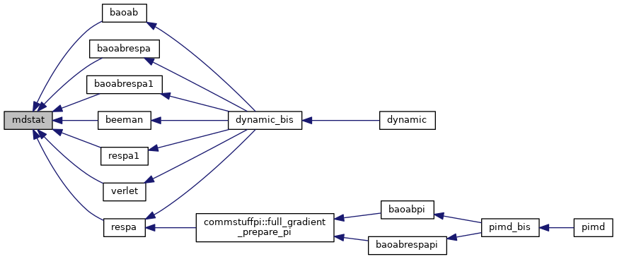
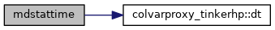
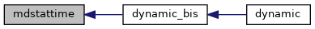

|
Tinker-HP v1.3
|
|
Tinker-HP v1.3
|
Go to the source code of this file.
Functions/Subroutines | |
| subroutine | mdstat (istep, dt, etot, epot, ekin, temp, pres) |
| "mdstat" is called at each molecular dynamics time step to form statistics on various average values and fluctuations, and to periodically save the state of the trajectory More... | |
| subroutine | mdstattime (istep, dt) |
| compute averages of various timings and output them if necessary More... | |
| subroutine mdstat | ( | integer | istep, |
| real*8 | dt, | ||
| real*8 | etot, | ||
| real*8 | epot, | ||
| real*8 | ekin, | ||
| real*8 | temp, | ||
| real*8 | pres | ||
| ) |
"mdstat" is called at each molecular dynamics time step to form statistics on various average values and fluctuations, and to periodically save the state of the trajectory
| [in] | istep,: | index of timestep |
| [in] | etot,: | total energy |
| [in] | epot,: | potential energy |
| [in] | ekin,: | kinetic energy |
| [in] | temp,: | instantaneous temperature |
| [in] | pres,: | instantaneous pressure |
Definition at line 28 of file mdstat.f90.
References colvarproxy_tinkerhp::dt().
Referenced by baoab(), baoabrespa(), baoabrespa1(), beeman(), respa(), respa1(), and verlet().

| subroutine mdstattime | ( | integer | istep, |
| real*8 | dt | ||
| ) |
compute averages of various timings and output them if necessary
| [in] | istep,: | index of timestep |
| [in] | dt,: | timestep |
Definition at line 330 of file mdstat.f90.
References colvarproxy_tinkerhp::dt().
Referenced by dynamic_bis().


 1.8.5
1.8.5